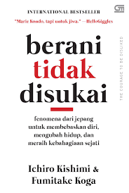

Isi buku ini mengajarkan kita untuk fokus pada hal-hal yang dapat kita kontrol, seperti sikap, tindakan, dan pemikiran kita sendiri, sementara menerima dengan bijaksana bahwa banyak hal dalam hidup berada di luar kendali kita.
2
The Psychology of Money
Pendidikan
Isi buku ini membahas berbagai aspek psikologi yang berpengaruh dalam keuangan, seperti kerentanan kita terhadap godaan, kecenderungan kita untuk mengambil risiko, dan efek dari perilaku manusia dalam menghadapi ketidakpastian
ekonomi.
3
Rich Dad Poor Dad
Pendidikan
Isi buku Ayah Kaya dalam buku “Rich Dad Poor Dad” menekankan pentingnya kewirausahaan dan memiliki bisnis sendiri sebagai cara untuk mencapai kebebasan finansial.
4

Berani Tidak Disukai
Novel
Buku ini menggambarkan bagaimana cara mengungkapkan kekuatan di dalam diri untuk mencapai kebahagiaan sejati dan menjadi versi terbaik dari diri kita.
5
Plant VS Zombies Kota Dinosaurus Kota Mainan
Manga
Buku Plant vs Zombies: Kota Dinosaurus Kota Mainan menceritakan petualangan seru Peashooter, Sunflower, dan teman-temannya di dua dunia unik, yaitu Kota Dinosaurus dan Kota Mainan. Di Kota Dinosaurus, mereka menghadapi
tantangan melawan zombie yang mempengaruhi dinosaurus, sambil mengenalkan berbagai jenis dinosaurus dan fakta menarik tentang zaman prasejarah. Petualangan berlanjut ke Kota Mainan, di mana mereka harus melindungi boneka,
robot, dan mainan lainnya dari serangan zombie, sekaligus mengajarkan kreativitas dan pentingnya kerja sama. Buku ini menggabungkan cerita seru dengan elemen edukasi yang menarik untuk pembaca muda.
6
Detektif Konan
Manga
Detective Conan adalah seri manga dan anime karya Gosho Aoyama yang mengisahkan Shinichi Kudo, seorang detektif remaja berbakat yang tubuhnya mengecil menjadi anak kecil setelah dipaksa menelan racun oleh organisasi misterius
bernama Black Organization. Dalam wujud barunya sebagai Conan Edogawa, Shinichi tinggal bersama teman masa kecilnya, Ran Mouri, dan ayahnya yang seorang detektif, Kogoro Mouri. Conan diam-diam membantu Kogoro memecahkan
berbagai kasus kriminal sembari berusaha mengungkap identitas dan membongkar rencana jahat Black Organization untuk mendapatkan kembali tubuh aslinya. Dengan campuran cerita misteri, humor, dan drama, seri ini dipenuhi
teka-teki yang menantang serta aksi yang penuh ketegangan.
7
Hanako Si Arwah Penasaran
Manga
Hanako Si Arwah Penasaran mengisahkan tentang seorang arwah bernama Hanako yang gentayangan di sebuah sekolah tua. Hanako dikenal sebagai urban legend yang kerap muncul di toilet sekolah, namun cerita ini menggali sisi lain
darinya—bukan sekadar menakut-nakuti, Hanako ternyata menyimpan kisah tragis yang membuatnya terjebak di dunia fana. Ketika sekelompok siswa penasaran mencoba memanggilnya, mereka justru terjerat dalam misteri masa lalu Hanako
yang penuh rahasia kelam. Dengan kombinasi horor, persahabatan, dan perjuangan melepaskan diri dari trauma, buku ini mengajak pembaca mengeksplorasi sisi kemanusiaan dari arwah yang terperangkap.
8
Crayon Shinchan 10
Manga
Crayon Shinchan Vol. 10 menghadirkan petualangan kocak Shinnosuke Nohara, bocah TK yang penuh tingkah. Dalam volume ini, Shinchan kembali membuat orang dewasa di sekitarnya kewalahan dengan kelakuan absurdnya, dari mengacaukan
aktivitas sekolah hingga menguji kesabaran orang tuanya, terutama sang mama, Misae. Cerita semakin seru dengan kehadiran teman-teman Shinchan yang sama usilnya, serta momen-momen menghibur di rumah bersama keluarga Nohara.
Dengan humor yang khas dan gaya cerita yang ringan, volume ini menjamin tawa sambil menggambarkan keseharian yang penuh warna. Cocok untuk pembaca yang ingin melepas penat dengan cerita ringan nan menghibur.
9
Ther Merlian
Manga
Ther Merlian adalah sebuah novel fantasi epik yang mengisahkan perjalanan seorang pemuda bernama Merlian, yang tanpa sengaja menemukan dirinya sebagai pewaris takhta dunia magis Ther. Di tengah konflik antara faksi-faksi magis
yang saling berseteru, Merlian harus menerima takdirnya sebagai penjaga keseimbangan dunia, meskipun ia belum memahami sepenuhnya kekuatan yang dimilikinya. Bersama sekelompok sekutu yang penuh warna, termasuk seorang penyihir
tua, prajurit tangguh, dan makhluk misterius dari hutan Ther, Merlian menghadapi intrik politik, pertempuran magis, dan rahasia kelam masa lalu yang mengancam menghancurkan segalanya. Perjalanan ini mengajarkan Merlian tentang
keberanian, pengorbanan, dan arti sebenarnya dari kekuasaan.
10
Si Juki Kroyokan
Manga
Si Juki Kroyokan adalah salah satu seri dari komik humor Indonesia yang mengisahkan Juki, seorang mahasiswa absurd dengan gaya hidup anti-mainstream, yang terjebak dalam berbagai situasi kocak dan penuh kekacauan. Dalam buku
ini, Juki menghadapi kehidupan sehari-hari yang serba ribet, mulai dari masalah kuliah, pertemanan, hingga kejadian aneh yang memicu keramaian di sekitarnya. Dengan humor yang segar dan satire sosial khas Juki, komik ini
menyajikan cerita yang menghibur sekaligus mengkritisi berbagai aspek kehidupan modern dengan gaya santai dan menggelitik. Cocok untuk pembaca yang mencari hiburan ringan dan relatable.
11
Gundala
Manga
Buku "Gundala" mengisahkan perjalanan Sancaka, seorang ilmuwan muda yang berubah menjadi pahlawan super setelah tersambar petir luar biasa. Dengan kekuatan super berupa kecepatan dan kemampuan mengendalikan listrik, Sancaka
harus menghadapi berbagai konflik pribadi dan sosial, termasuk melawan kejahatan yang mengancam kota dan menyelamatkan orang-orang yang ia cintai. Di tengah perjuangannya, Sancaka dihadapkan pada dilema moral tentang tanggung
jawabnya sebagai manusia biasa dan sebagai Gundala, simbol harapan bagi masyarakat yang tertindas. Buku ini memadukan aksi mendebarkan, drama emosional, dan kritik sosial yang relevan dengan kehidupan modern.
12
My Pro tiective Billionairs
Novel
My Protective Billionaire adalah kisah romansa yang menggetarkan hati tentang Emma, seorang wanita mandiri yang secara tak terduga masuk ke dalam kehidupan Daniel, seorang miliarder tampan namun penuh misteri. Ketika sebuah
insiden mengancam keselamatan Emma, Daniel bersumpah untuk melindunginya, membuka sisi lembut di balik penampilan dingin dan sikap kerasnya. Seiring waktu, mereka terjebak dalam pusaran emosi yang mengungkap luka masa lalu,
rahasia gelap, dan perjuangan melawan rasa takut untuk mencintai. Dengan perpaduan antara ketegangan, gairah, dan kasih sayang, novel ini menunjukkan bahwa cinta sejati dapat tumbuh di tengah badai kehidupan.
13
Suara Dari Dilan
Novel
Suara dari Dilan adalah novel yang menghadirkan perspektif baru dari kisah cinta ikonis Dilan dan Milea, yang sebelumnya diceritakan dalam *Dilan: Dia adalah Dilanku Tahun 1990* dan *Dilan 1991*. Dalam buku ini, Dilan berbagi
cerita dari sudut pandangnya, mengungkapkan pemikirannya tentang hubungan mereka, kenangan indah, konflik, dan perasaan yang selama ini tidak diketahui oleh Milea. Buku ini memperlihatkan sisi emosional Dilan yang lebih
mendalam, menjelaskan alasan di balik tindakannya, serta menyoroti perjuangan cinta mereka di tengah berbagai rintangan yang harus dihadapi. Dengan gaya penulisan yang santai namun penuh makna, novel ini memberikan sudut
pandang baru yang menyentuh hati para pembaca.
14
Perahu Kertas
Novel
Perahu Kertas karya Dee Lestari bercerita tentang kisah cinta antara Kugy, seorang gadis yang memiliki impian untuk menjadi penulis, dan Keenan, seorang pemuda yang penuh dengan ambisi dan seni. Mereka bertemu sejak kecil,
tetapi kehidupan mereka membawa mereka ke jalan yang berbeda. Meski begitu, hubungan mereka tetap terjaga melalui pertemuan-pertemuan tak terduga dan perjalanan pribadi yang mereka jalani. Buku ini menggambarkan perjuangan
mengejar impian, pencarian jati diri, serta kompleksitas hubungan antara dua orang yang saling mencintai namun harus belajar untuk memahami diri mereka sendiri dan satu sama lain.
15
Mengaji Bersama Bapak
Novel
Mengaji Bersama Bapak adalah sebuah buku yang mengangkat kisah kehidupan seorang anak yang belajar dan bertumbuh bersama ayahnya dalam tradisi mengaji. Dalam buku ini, sang anak tidak hanya belajar membaca Al-Qur'an, tetapi
juga mendapatkan pelajaran hidup, nilai-nilai spiritual, dan pengajaran yang dalam tentang kesabaran, keikhlasan, serta cara menghargai hidup. Buku ini menggambarkan kedekatan hubungan ayah dan anak, di mana momen-momen
mengaji menjadi simbol dari perjalanan pemahaman agama, sekaligus proses kedewasaan dan pencarian makna hidup yang lebih dalam. Setiap bab dalam buku ini menggali tema-tema kehidupan yang relevan dengan situasi sehari-hari,
membawa pembaca untuk merenung tentang nilai-nilai yang diajarkan dalam ajaran agama.
16
The Guest And Other Stories
Novel
The Guest and Other Stories adalah kumpulan cerita pendek karya Albert Camus yang menggali tema-tema eksistensialisme, kebebasan, dan absurditas kehidupan. Dalam cerita utamanya, "The Guest," seorang guru bernama Daru di
sebuah desa terpencil di Aljazair dihadapkan pada dilema moral ketika dia harus memilih antara menyerahkan seorang tahanan Arab kepada otoritas Prancis atau membiarkannya pergi. Melalui cerita-cerita ini, Camus mengeksplorasi
konflik batin karakter-karakternya yang terjebak dalam situasi yang penuh ketidakpastian, di mana pilihan mereka seringkali tidak membawa solusi yang jelas, menciptakan ketegangan antara tanggung jawab pribadi dan keterasingan
sosial.
17
Manusia Dan Badainya
Novel
Manusia dan Badai karya Taufiq Ismail menggambarkan perjuangan manusia dalam menghadapi kesulitan hidup yang datang silih berganti bagaikan badai. Dalam buku ini, Taufiq Ismail menggali kedalaman perasaan manusia yang
terkadang terhimpit oleh realita sosial, politik, dan kehidupan yang keras. Melalui puisi-puisi yang penuh makna, penulis menyampaikan bahwa meskipun manusia tak bisa menghindari badai yang datang, namun mereka tetap dapat
bertahan dengan kekuatan batin dan keteguhan hati. Buku ini menyentuh berbagai aspek kehidupan, memberikan refleksi tentang keteguhan, harapan, dan perjuangan dalam menghadapi tantangan hidup.
18
Filosofi Kopi
Novel
Filosofi Kopi karya Dee Lestari bercerita tentang perjalanan dua sahabat, Ben dan Jody, yang memiliki kedai kopi bernama Filosofi Kopi. Mereka bukan hanya berusaha mencari cita rasa kopi yang sempurna, tetapi juga mengupayakan
pemahaman yang lebih dalam tentang kehidupan dan diri mereka. Dalam kisah ini, Ben adalah seorang barista yang terobsesi dengan kopi, sementara Jody adalah seorang pemikir yang lebih melihat kopi sebagai simbol perjalanan
hidup. Melalui interaksi mereka dengan berbagai karakter dan pengalaman hidup yang penuh makna, cerita ini menggambarkan tentang pencarian makna, harapan, dan perubahan, yang tercermin dalam filosofi kopi yang mereka temukan.
19
Matriks Persamaan Linier dan Pemrograman Linier
Pendidikan
Buku "Matriks Persamaan Linier dan Pemrograman Linier" membahas dua topik utama dalam matematika terapan, yaitu matriks persamaan linier dan pemrograman linier. Topik pertama mencakup teori dan metode untuk menyelesaikan
sistem persamaan linier dengan menggunakan matriks, termasuk teknik seperti eliminasi Gauss, invers matriks, dan aturan Cramer. Sementara itu, pemrograman linier membahas optimisasi masalah dengan tujuan memaksimalkan atau
meminimalkan suatu fungsi objektif, dengan batasan berupa sistem persamaan atau pertidaksamaan linier. Buku ini menggabungkan kedua konsep tersebut untuk memberikan pemahaman tentang aplikasi teknik matematika dalam berbagai
bidang, seperti ekonomi, rekayasa, dan ilmu komputer, serta menyajikan pendekatan sistematis untuk memecahkan masalah-masalah kompleks yang melibatkan banyak variabel dan kondisi terbatas.
20
Aljabar Linier Elementer
Pendidikan
Buku Aljabar Linier Elementer dan Pemrograman Linier membahas konsep-konsep dasar aljabar linier yang meliputi sistem persamaan linear, matriks, determinan, ruang vektor, dan transformasi linear, yang merupakan fondasi penting
dalam memahami berbagai masalah matematika dan teknik. Buku ini juga mengintegrasikan konsep pemrograman linier, yang mencakup model matematika untuk optimisasi, teknik pemecahan masalah melalui metode grafik dan algoritma
simplex, serta aplikasinya dalam pengambilan keputusan dan alokasi sumber daya secara efisien. Pembahasan disajikan dengan contoh-contoh konkret dan pendekatan yang memudahkan pembaca dalam memahami teori serta penerapan
praktis dalam dunia nyata.
21
Pisikologi Komunikasi Dakwah
Pendidikan
Buku Psikologi Komunikasi Dakwah membahas konsep dasar komunikasi dalam konteks dakwah, mengupas bagaimana cara menyampaikan pesan agama secara efektif dengan memahami kondisi psikologis audiens, serta memanfaatkan pendekatan
yang tepat agar pesan dapat diterima dan dipahami dengan baik. Sedangkan *Pemrograman Linier* mengajarkan teknik-teknik matematis untuk menyelesaikan masalah optimasi, di mana tujuan utamanya adalah untuk memaksimalkan atau
meminimalkan suatu fungsi objektif dengan memperhatikan berbagai kendala atau batasan yang ada, menggunakan metode-metode seperti Simplex atau grafik. Kedua buku ini, meskipun memiliki fokus yang berbeda, memberikan wawasan
penting dalam bidang komunikasi dan matematika terapan untuk menyelesaikan masalah praktis dalam kehidupan sehari-hari.
22
Dark Psychology
Pendidikan
Buku Dark Psychology membahas teknik dan strategi manipulatif yang digunakan untuk mempengaruhi, mengendalikan, atau mengeksploitasi orang lain demi kepentingan pribadi. Buku ini mengungkapkan berbagai konsep psikologis yang
bisa dimanfaatkan untuk memanipulasi pikiran, perasaan, dan perilaku orang lain, seperti pemanfaatan kebohongan, penipuan, pengaruh sosial, dan kontrol emosional. Meskipun topik ini seringkali kontroversial, buku ini bertujuan
memberikan wawasan tentang bagaimana manusia bisa digunakan atau dimanfaatkan dalam konteks yang tidak etis, serta bagaimana cara melindungi diri dari perilaku manipulatif tersebut.
23
Pengantar Psikologi
Pendidikan
Buku Pengantar Psikologi memberikan pemahaman dasar mengenai psikologi sebagai ilmu yang mempelajari perilaku dan proses mental manusia. Buku ini membahas berbagai topik mulai dari perkembangan manusia, emosi, motivasi,
persepsi, hingga gangguan psikologis. Dengan pendekatan yang mencakup teori-teori utama dalam psikologi serta aplikasinya dalam kehidupan sehari-hari, buku ini bertujuan untuk memberikan wawasan tentang bagaimana faktor
internal dan eksternal mempengaruhi cara berpikir, merasakan, dan bertindak. Selain itu, buku ini juga memperkenalkan berbagai metode penelitian yang digunakan dalam psikologi untuk mengungkap fenomena perilaku manusia.
24
Universitas Terbuka 39 TH Bertransformasi
Pendidikan
Buku "Universitas Terbuka 39 Tahun Bertransformasi" karya Try Harijono mengulas perjalanan Universitas Terbuka (UT) sejak didirikan pada 4 September 1984 hingga usianya yang ke-39 tahun. Dari awal yang sederhana dengan bahan
ajar cetak dan tutorial tatap muka, UT telah bertransformasi menjadi perguruan tinggi terbesar di Indonesia dengan lebih dari dua juta alumni dan anggaran tahunan mencapai Rp 1,3 triliun. Kini, UT sepenuhnya menerapkan sistem
pembelajaran daring, termasuk pendaftaran mahasiswa, penyediaan bahan ajar, layanan tutorial, hingga ujian yang dilakukan secara online. Buku ini juga menyajikan dokumentasi dari Harian Kompas mengenai berbagai aktivitas UT,
termasuk kritik dan saran konstruktif dari masyarakat, sebagai bentuk apresiasi terhadap dedikasi UT dalam mencerdaskan bangsa.


.jpg)
.jpg)
.jpg)
.jpg)
.jpg)
.jpg)
.jpg)
.jpg)
.jpg)
.jpg)
.jpg)
.jpg)
.jpg)

.jpg)
.jpg)
.jpg)
.jpg)
.jpg)
.jpg)